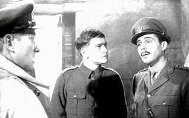

| King
and Country/B,B- |
| VCI/1964/86/WS 1.66 |
Powerful depiction of a deserter's court martial
during World War I. Directed with pragmatic harshness by Joseph Losey, this gritty drama is
sharp as the barbed wire that lined the trenches of "the great war."
 |
| Defending the prisoner. ©VCI |
Tom Courtenay is wonderful as the private on
trial. Courtenay's accepting continence is rather pathetic and innocent. The nuances captured by
the actor validate his own uncertainty of guilt. Dirk Bogarde is outstanding as Captain Hargreaves
who is assigned to defend the prisoner. Bogarde must find a way through the military expediency.
Bogarde's frustration is evident at every turn.
Mud splatters itself over every frame of this film, spoiling purity of the cold
military proceedings. Stark production design emphasizes the inevitable march over the individual
soldier. King and Country is good example of the school of social conscience filmmaking that
had a strong impact of 1960s audiences. Well worth a look.
Source material for the transfer is in good condition. The transfer
extracts maximum sharpness from the elements. Contrast range varies widely depending on the scenes,
but for the most part it is quite good. Some background details exhibit jitter, but you have to
look for them. The British accents are somewhat difficult to follow and the Dolby Digital 2 channel
mono soundtrack introduces its own helping of distortion, making it that much more difficult to
understand
|
|
|
|

The Feature Archive
has articles ranging from Akira
Kurosawa to Blonde Bimbos.

Click on the image above for a "dream interview" with director John Ford.

 Have you visited Home Theater
Talk lately? One of the friendliest places on the Net for Home Theater and DVD discussion, you
can get help for installation problems or simply share your opinions with other Vidiots. Have you visited Home Theater
Talk lately? One of the friendliest places on the Net for Home Theater and DVD discussion, you
can get help for installation problems or simply share your opinions with other Vidiots.

European film portal and hard to find video store.

News, information, features about current films in theaters and in the
pipeline. Easy to use interface.

The National Film Preservation Foundation (NFPF) is the nonprofit organization created by the U.S. Congress to save
America's film heritage.
|